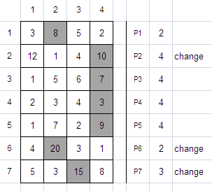
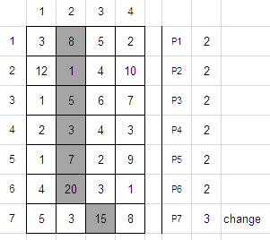

Given a matrix A of size N x M, write a program to find p1, p2, ..., pn to maximize A[1][p1] + A[2][p2] + ... + A[n][pn]. You are only allowed to change pi no more than K times (changes occur when pi is not equal to pi-1). You may choose p1 anywhere from 1 to M and it will not be counted as a change.
For example, given a matrix of 7 x 4 as shown below and K = 3.
The maximum sum that you can get is 8 + 10 + 7 + 3 + 9 + 20 + 15 = 72. But if you are only allowed to make changes at most one time (K = 1), then the maximum sum that you can get is 59.
The first line of input contains an integer T (1 ≤ T ≤ 100) the number of cases. Each case begins with three integers N, M and K (1 ≤ N ≤ 100; 1 ≤ M ≤ 10; 0 ≤ K < N). The next N lines each contains M integers representing the given matrix. Each integer in the matrix is between 1 and 1,000 inclusive.
For each case, output in a single line the maximum sum that you can get from the matrix.
|